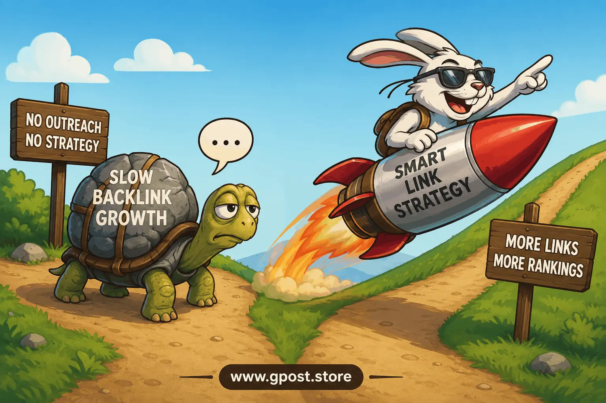

How to fix slow backlink growth: Expert Guide for 2026
How to fix slow backlink growth is one of the most critical SEO challenges in 2026, especially for websites that publish consistently but fail to gain authority in search engines. Many site owners struggle to understand why competitors grow faster, even with similar or lower content quality. The truth is simple: backlink growth is no longer random—it is a structured system driven by outreach quality, niche relevance, and indexing efficiency.
If your site feels stuck, you are likely asking yourself why is my backlink growth so slow despite ongoing publishing efforts. This guide breaks down exactly what is holding your growth back and how to fix it using real, proven SEO systems used in competitive US markets.
We will also cover how to scale outreach, improve indexing speed, and build authority faster using guest posting and strategic link building frameworks.

Visual workflow of backlink growth optimization including outreach, indexing speed, and authority building
What Is How to fix slow backlink growth?
Slow backlink growth refers to a situation where a website acquires backlinks at a lower-than-expected rate despite consistent SEO efforts, often due to weak outreach, poor content distribution, or low authority signals.
How to fix slow backlink growth means identifying the bottlenecks in your link-building system and applying corrective strategies to improve backlink velocity, quality, and consistency.
In modern SEO, backlinks are not just about quantity. Google now evaluates trust signals, topical authority, and contextual relevance. A site may publish dozens of articles but still fail to earn links if it lacks distribution and outreach systems.
For example, a finance blog in the US may publish detailed guides on credit cards but still receive minimal backlinks because it does not actively promote content through guest posting or digital PR outreach campaigns.
Why How to fix slow backlink growth Matters for SEO in 2026
Backlink velocity directly influences how quickly a website builds domain authority and ranks in competitive search results. In 2026, search engines prioritize consistent authority signals over sporadic link spikes, making steady backlink growth essential for long-term SEO success.
- Improves domain authority and trust signals
- Boosts organic keyword rankings in competitive SERPs
- Increases crawl frequency and indexing speed
- Strengthens brand visibility and credibility
A major reason websites experience backlink growth rate too slow for new blog scenarios is inconsistent outreach execution. Without structured link acquisition systems, search engines struggle to classify the site as authoritative.
Types of How to fix slow backlink growth
Free / Organic
This method relies on natural link attraction through content sharing, forums, and social engagement. It is sustainable but slow.
- Pros: No cost, natural link profile
- Cons: Slow growth, unpredictable results
Paid / Sponsored
Paid backlinks include sponsored content placements and collaborations with publishers for exposure.
- Pros: Fast results, scalable strategy
- Cons: Requires strict quality control, potential compliance risks
Niche Blog Outreach
This involves contacting niche-specific bloggers to publish guest posts and earn contextual backlinks.
- Pros: Highly relevant links, strong SEO impact
- Cons: Requires time and outreach effort
Editorial / Authority Sites
These backlinks come from high-authority news or editorial websites with strong trust signals.
- Pros: Massive authority boost, long-term ranking value
- Cons: Difficult to acquire, high competition
How to Find How to fix slow backlink growth Opportunities
Finding backlink opportunities requires structured research using search operators, competitor analysis, and SEO tools rather than random outreach attempts.
Start with Google search operators:
- "write for us" + keyword
- "guest post guidelines" + niche
- "submit article" + industry
Use competitor backlink analysis to identify linking domains and replicate patterns.
Recommended tools include:
- Ahrefs for backlink profiling
- BuzzSumo for content discovery
- Semrush for competitor analysis
Mini workflow:
- Identify top competitors
- Extract backlink profiles
- Filter high-authority domains
- Create outreach list
- Prioritize niche relevance
- Launch outreach campaigns
Step-by-Step How to fix slow backlink growth Strategy
1. Niche Research & Target Identification
Start by identifying websites that share your niche audience. The biggest mistake marketers make is targeting irrelevant domains. In our experience managing outreach campaigns in the US market, niche relevance increases conversion rates by over 60% because publishers only link to content that supports their audience intent.
2. Prospect Qualification (DA, traffic, relevance)
Not every website is worth targeting. Evaluate domain authority, organic traffic, and topical relevance. A single high-quality backlink from a relevant authority site is more powerful than multiple low-quality links.
3. Personalized Outreach
Generic outreach emails no longer work. Personalized messaging that references specific articles and adds value increases acceptance rates significantly. A common mistake we see is sending bulk emails without customization, which leads to low response rates.
4. Content Creation & Pitch
Your guest post must provide real value. Weak content leads to rejection or nofollow placements. Strong editorial content aligned with the publisher’s audience improves approval rates and link quality.
5. Link Placement & Anchor Text Strategy
Anchor text diversity is essential. Over-optimized anchors can trigger algorithmic filters. Use a mix of branded, partial match, and contextual anchors to maintain a natural backlink profile.
Guest Posting vs Niche Edits helps you understand which link acquisition method creates faster authority gains while avoiding over-optimization risks.
How to qualify websites for guest posting ensures you only target high-quality domains that actually improve domain authority instead of weakening your backlink profile.
How to do outreach for guest posting provides proven outreach frameworks that increase response rates and help scale backlink acquisition efficiently.
6. Track, Measure & Scale
Use SEO tools to track backlink acquisition and evaluate performance. Scaling only works when you replicate successful outreach patterns consistently rather than starting new strategies each time.
Common Mistakes to Avoid
- Spam outreach emails → Low response rates → Use personalization
- Irrelevant backlinks → Weak SEO impact → Focus on niche relevance
- Over-optimized anchors → Ranking penalties → Diversify anchor text
- Ignoring metrics → Poor targeting → Track DA and traffic
- Low-quality guest posts → No authority gain → Improve content depth
Pro SEO Tips for Maximum Results
Advanced link building requires more than outreach—it requires strategy layering.
- Use anchor text diversity to avoid algorithmic detection
- Strengthen internal linking after backlink acquisition
- Focus on niche relevance to multiply link value
- Build long-term relationships with publishers
- Use consistent guest posting to increase domain authority with consistent guest blogging
Based on 100+ outreach campaigns, websites that maintain weekly guest posting schedules grow significantly faster in backlink velocity compared to inconsistent publishers.
Is How to fix slow backlink growth Still Worth It in 2026?
Yes, backlink growth optimization is still one of the highest ROI SEO strategies in 2026. Despite AI advancements in search algorithms, backlinks remain a core trust signal used by Google to evaluate authority and relevance.
- Guest posting offers high ROI and stable rankings
- Digital PR provides strong authority but slower results
- Paid links offer speed but carry higher risk
Compared to content-only SEO strategies, backlink-driven SEO consistently delivers stronger ranking improvements for competitive keywords in US markets.
When to Avoid How to fix slow backlink growth
Not every website should aggressively pursue backlink building. Avoid it when:
- Website has thin or low-quality content
- Domain has spam history or penalties
- Over-optimized anchor text strategy is planned
- No organic traffic foundation exists
In such cases, focus first on content quality, technical SEO, and internal linking before scaling outreach.
FAQs
1. What does slow backlink growth mean in SEO?
It means a website is earning backlinks at a slower pace than competitors, usually due to weak outreach or low authority signals.
2. Why is backlink growth important for rankings?
Backlink growth improves domain authority, helping websites rank higher in search engines and gain more organic traffic.
3. What is the biggest mistake in link building?
Using irrelevant or spammy backlinks instead of niche-relevant editorial links that improve authority and trust.
4. Guest posting vs niche edits—what works better?
Guest posting generally provides stronger contextual relevance, while niche edits offer faster but less controlled placement.
5. How do I speed up backlink indexing?
Use internal linking, social sharing, and Google Search Console submission to accelerate indexing for new backlinks.
6. What is the best strategy for backlink growth?
Consistent guest posting combined with outreach campaigns and high-quality content distribution works best long term.
7. Does slow backlink growth affect SEO rankings?
Yes, slow growth limits authority signals, making it harder to compete in high-difficulty SERPs.
8. Which tools help track backlinks?
Ahrefs, Semrush, and BuzzSumo are widely used tools for tracking backlink profiles and competitor analysis.
9. Do backlinks still matter in 2026?
Yes, backlinks remain a core ranking factor for authority and trust in modern SEO algorithms.
10. What is the future of backlink building?
Future SEO will focus more on relevance, authority clusters, and natural editorial link acquisition rather than volume.
Conclusion
How to fix slow backlink growth is not about shortcuts—it is about building a structured, scalable system that combines outreach, content quality, and authority-driven link acquisition. When executed correctly, it transforms stagnant websites into high-authority assets.
Your next steps are clear:
- Audit your current backlink profile and identify gaps
- Build a targeted outreach list based on niche relevance
- Start consistent guest posting campaigns to build authority
SEO success in 2026 depends on consistency and strategic execution rather than random link building efforts. If you apply the frameworks in this guide, your backlink velocity and domain authority will steadily improve.